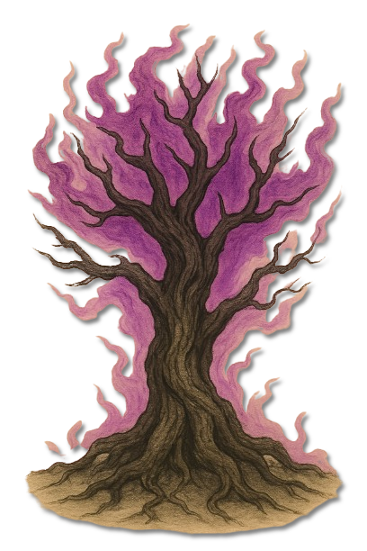
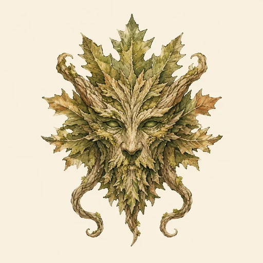
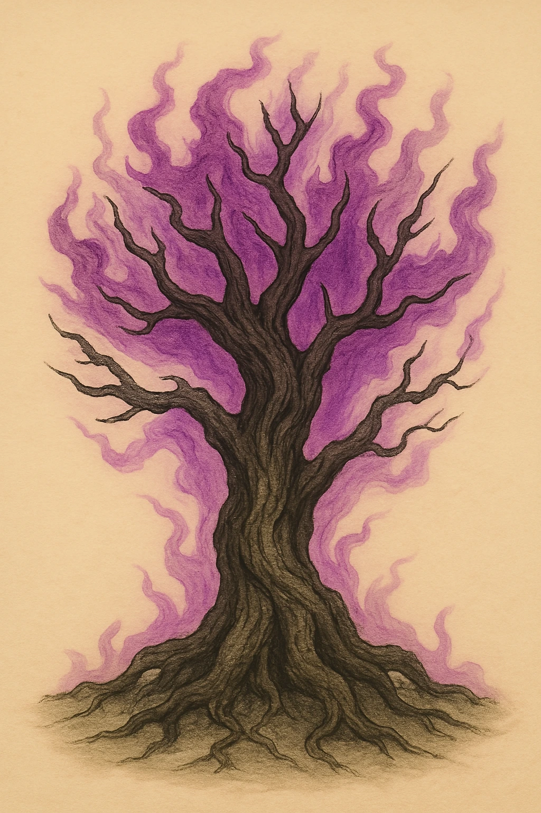

Korrumpierte Ahnenbäume und Druiden
Korrumpierter (Ahnenbaum)
Ein einstiger Wächterbaum, dessen Wurzeln und Krone von Zatrachs violetter Verderbnis durchzogen werden.

KreaturenarchivAleria · Wälder und korrumpierte Naturstätten · Archivblatt IV / 08
Jäger, Diener und korrumpierte Naturwächter Zatrachs
Sylvaniiden sind Kreaturen und Diener Zatrachs sowie seines Geweihten Arkeon, des Häschers. Sie verkörpern Wald, Jagd, Revier und Herausforderung; besonders gefährlich sind jene Ahnenbäume, Druidenseelen und Ahnentiere, deren früherer Schutzauftrag durch Zatrachs Korrumpierung gegen die Natur gewendet wurde.

„Wo ein geweihter Wächter plötzlich Jagd auf seine Schützlinge macht, hat Zatrach den alten Eid bereits verdreht.“Warnung aus einem silvanischen Hüterkreis
Sechs Merkmale · Skala 1–10
Die Sylvaniiden-Tafel bewertet ihre Herrschaft über Jagdraum und Umgebung ebenso wie den Grad der Korrumpierung und die Bindung an den zugrunde liegenden Fluch.
Quelle der Einordnung: Aus territorialem Verhalten, Zatrachs Korrumpierung, Umgebungsmanipulation und den überlieferten Bann- und Reinigungsmitteln abgeleitet
Sylvaniide ist der Oberbegriff für Kreaturen und Diener Zatrachs, des Jägers, sowie seines Geweihten Arkeon, des Häschers. Sie spiegeln Wald, Jagd und das Streben nach Herausforderung wider.
Menschen betrachten sie nicht immer als so wahllos zerstörerisch wie andere infernale Wesen. Dennoch wird jeder, der ihr Territorium betritt oder ihre Rituale stört, rasch zum Gejagten.
Zatrach verleiht seinen Geschöpfen intensiven Jagdtrieb, territoriales Verhalten und eine tiefe Erfüllung im Überwinden von Widerstand. Dadurch reagieren sie nicht nur auf Hunger oder Gefahr, sondern auf jede wahrgenommene Herausforderung.
Zatrachs Verderbnis kann Ahnenbäume, Druidenseelen und Ahnentiere erfassen. Die betroffenen Wächter verlieren ihre frühere Reinheit und setzen Schutz, Magie und Erinnerung im Dienst der Jagd ein.
Korrumpierte Sylvaniiden zeigen damit, dass selbst die heiligsten Bewahrer der Wildnis gegen ihren ursprünglichen Auftrag gewendet werden können.
Die überlieferten Formen reichen vom gebundenen Baum und Geist über geweihtragende Ahnentiere bis zu Waldschraten, bewaffneten Dienern und kleinen Hornlingen. Ihre Silhouetten bewahren Spuren der Natur, aus der sie hervorgingen.
Feuer, heilige Magie und Reinigungsmagie gelten als wirksam. Wird ein Altar Zatrachs zerstört, kann dies die örtliche Macht seiner Diener schwächen.
Illusionen und die Manipulation der Umgebung machen direkte Angriffe gefährlich. Wege, Deckung und vermeintlich sichere Lichtungen können Teil der Jagd sein.
Korrumpierte Ahnenbäume und Druiden gehören zu den schwierigsten Gegnern. Ihre Zerstörung kann unmöglich sein oder die in ihnen gebundene Seele vernichten.
Dauerhafter Erfolg verlangt daher häufig hohe Magie, das gezielte Brechen des Fluchs oder göttliche Hilfe. Erlösung und Sieg sind bei diesen Wesen nicht immer dasselbe.